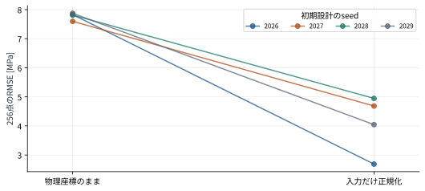
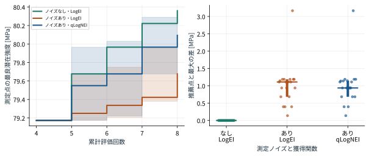
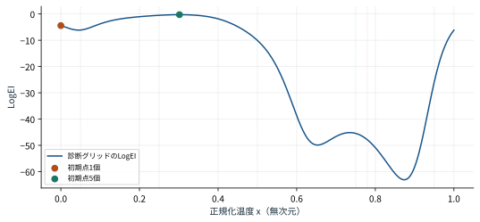
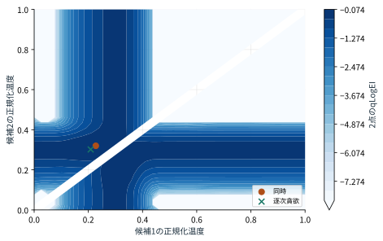

第7章 ベイズ最適化の実践上の課題
反復のコードが動いたら、測定のたびに良い条件へ近づくでしょうか。候補の良し悪しには、データの尺度、測定のばらつき、代理モデルの仮定、獲得関数を最大化する数値計算が関わります。本章では材料試験を使い、何を固定して何を変えたかを確かめながら、四つの実験を読みます。
7.1 入力の正規化と出力の標準化
現場の入力列には異なる単位が混在します。温度 \(T\) は140〜180 °C、添加比 \(r\) は0〜0.01とします。正規化は、各列に指定した物理的な探索範囲を \([0,1]\) に写します。温度と添加比を \(x_T=(T-140)/40\) と \(x_r=r/0.01\) にすると、それぞれの長さ尺度は範囲に対する距離の比として解釈できます。探索範囲を実験途中の最小値・最大値に随時置き換えるなら、履歴と座標変換の関係も管理する必要があります。
第7章のNotebookでは、物理単位の入力をそのまま渡し、BoTorchの Normalize に内部変換を任せます。テンソルは温度・添加比の列順を揃えます。次の抜粋を試すには、Notebookを開き、冒頭の8点の学習データを作るセルまで実行します。train_var は強度の観測分散で、単位は \(\mathrm{MPa}^2\) です。
from botorch.models.transforms.input import Normalize
from botorch.models.transforms.outcome import Standardize
from robotorchan.models import SingleTaskGP
gp = SingleTaskGP(
train_x, train_y, train_Yvar=train_var,
input_transform=Normalize(d=2, bounds=bounds_2d),
outcome_transform=Standardize(m=1),
)
gp.fit()標準化は出力の中心と尺度を調整します。学習データの平均 \(m_y\) と正の標準偏差 \(s_y\) を使い、\(y'=(y-m_y)/s_y\) と変換すると、分散は \(s_y^2\) で割ります。BoTorchの Standardize を使うこのモデルでは、posterior が返す強度を元のMPa尺度で読みます。獲得関数の best_f に観測最大値を渡す場合も、posteriorと同じ尺度にします (BoTorch Contributors, 日付なし-a)。
Notebookでは、温度と添加比の合成試験に8点の初期設計を使います。初期設計のシードを4通り変え、各回でデータ・モデル・出力標準化・256の検証点を揃えて、入力の正規化だけを変えます。平均予測と基準値の平方誤差の平均に平方根を取ったRMSEを計算します。

RMSEの中央値は、物理座標のモデルで 7.82 MPa、入力を正規化したモデルで 4.36 MPa でした。この合成試験では4回の比較中4回で正規化後の誤差が小さくなりました。
この差には、採用したGPのカーネル・長さ尺度の事前設定と入力尺度の組み合わせが関わります。温度の尺度で全列を割る操作や、測定器に入力する値を二重に変換する操作は避けます。最初に候補の列順、元の単位、入力変換後の範囲、返却される座標を確認します。
7.2 観測ノイズと、測定済みの最良値
同じ温度で測っても結果が変わるとき、観測は \(y_i=f(x_i)+\varepsilon_i\) です。候補選びに観測の最大を使うと、正の誤差が乗った点を次の基準にすることがあります。第4章の区間の違いと同じく、次の測定値、潜在強度、推薦する条件を区別します。
ノイズ下の期待改善を考える一つの方法は、測定済み入力の潜在値も事後分布で扱うことです。既測定の入力集合を \(B\)、新しい候補の集合を \(X\)、\(F_B,F_X\) を対応する潜在値ベクトルとします。概念上の改善は、同時事後分布から一組の潜在値をサンプルするごとに
\[ I(F_B,F_X)=\max\!\left(0,\ \max F_X-\max F_B\right) \]
です。その期待値がnoisy EIの考え方です。実行例の qLogNoisyExpectedImprovement は、既観測入力を X_baseline に渡し、同時サンプリングと対数領域の近似で計算します。初期観測の誤差が大きいときの比較対象として使います (Letham ほか 2019年; Ament ほか 2023年)。
三つの条件を同じ1次元合成試験で比べます。各seed・各条件で初期4点と追加4点です。既測定点を除いた残りの候補から1点を選びます。ノイズありの二条件では、同一seed・同一温度に同じ誤差を割り当て、モデルにも同じ既知の観測分散 \(4\,\mathrm{MPa}^2\) を渡します。ノイズなしの設定では測定は決定論的で、モデルの計算用に第1章と同じ小さな分散 \(0.01\,\mathrm{MPa}^2\) を指定します。
| 比較 | 変えるもの | 共通のもの |
|---|---|---|
| ノイズなしLogEI／ノイズありLogEI | 測定ノイズとモデルに渡す測定分散 | 潜在目的関数、初期点、評価予算、獲得関数 |
| ノイズありLogEI／ノイズありqLogNEI | 改善の基準とその計算法 | 温度ごとの誤差、初期点、評価予算、観測モデル |

| 条件 | 最良観測値の中央値 [MPa] | 推薦点と最大値の差の中央値 [MPa] |
|---|---|---|
| ノイズなし・LogEI | 80.36 | 0.00 |
| ノイズあり・LogEI | 81.89 | 1.02 |
| ノイズあり・qLogNEI | 82.13 | 1.02 |
ノイズありでは最良観測値が高く出ても、推薦点と真の最大との間に差が残りました。右列で0は最大値の温度を推薦できたことを示します。
潜在真値は合成実験の評価にだけ使っています。実データでは、推薦候補の再測定や、別に用意した検証データが必要です。4seedの結果にはばらつきがあります。実験を比較するときは、seedごとの値と測定予算を一緒に示し、複数の問題でも同じ傾向が出るかを調べます。
7.3 GPの仮定と、訓練データだけでは見えない誤差
測定点の近くで予測が合っていても、未知領域の予測が良いとは限りません。例えば、実際には特定温度を境に相変化が起きる材料を、全領域で同じ滑らかさのカーネルで表すと、境界をまたいで過度に平均化することがあります。長さ尺度が極端に短くなると、測った点の近くだけに合わせ、温度の少しの差で予測が大きく変わる場合があります。
モデルの診断では、学習に使わなかった温度や反復測定で、誤差と区間を確かめます。観測値に対しては、潜在区間に測定ノイズを加えた予測区間を使います。温度域ごとの残差、測定機器の違い、見かけの外れ値を記録すると、どの仮定を変えるべきか判断しやすくなります。比較する前処理や獲得関数を決めるデータと、最終性能を報告するデータの役割も分けます。
7.4 局所解と初期点を診断する
獲得関数はモデルの上で評価する数値関数です。連続最適化では、高い山が複数あると、初期点によって異なる山に到達することがあります。獲得関数が平坦に見える場所や、入力範囲の境界で止まったときには、戻り値の座標だけでなく、候補でのスコア、終了条件、初期点に使ったスコアを見ます。

初期点1個では \(x=0.000\)（LogEI -4.42）、5個では \(x=0.302\)（LogEI -0.25）を得ました。501点の診断グリッドでは \(x=0.302\) 付近の値が最も高くなりました。
初期点を増やすと候補計算は重くなります。測定が高価な場合にはその計算を費やす価値がありますが、目的関数がすぐ評価できる場合は候補計算時間も比較に入れます。1次元では描画グリッドが診断に使えます。高次元では、初期点の分布、複数の再スタート、制約を満たす候補のスコアを記録して再現します (BoTorch Contributors, 日付なし-b)。
7.5 バッチ評価と同時事後分布
2台の装置で同時に測れるなら、次の2点を一度に提案できます。\(q=2\) の獲得関数に与える候補は \((2,d)\) です。\(d=1\) のこの例で、1組をモデルに評価させるテンソルは \((1,2,1)\) とします。既知の改善基準 \(b\) に対するバッチEIは、同時事後分布の関数値 \(F_1,F_2\) を使い、\(\mathbb E[(\max(F_1,F_2)-b)_+]\) で定義できます。二つの温度が近いと予測が似て、一方の測定から得られる知見ともう一方が重なることがあります。
同時最適化では、\(q\) 点をまとめた組を一つの変数として最適化します。逐次貪欲法では最初の候補を選び、その点を保留点として次を選びます。この間に物理的な測定結果は取り込みません。測定してから次の点を選ぶ逐次実験とは、候補を決める時点で利用できる情報が異なります。実行例は qLogExpectedImprovement を使い、optimize_acqf の sequential を切り替えます (Ament ほか 2023年; BoTorch Contributors, 日付なし-b)。

| 方式 | 候補の正規化温度 | 2点を同じqLogEIで再評価 |
|---|---|---|
| 同時 | 0.227、0.320 | -0.060 |
| 逐次貪欲 | 0.209、0.302 | -0.084 |
この図は2点の獲得値を診断するものです。比較した値には、128個の準モンテカルロサンプルを使う近似の影響が含まれます。測定を実行するなら各組は2回分の評価予算を使います。装置が2台でも準備と検査が直列なら、経過時間は半分とは限りません。実験のログには評価済み点数、提案時間、装置で測定している時間、試料準備などの待ち時間を分けて残します。
7.6 再現性と演習
探索範囲、初期点、測定ノイズ、乱数シード、予算、失敗を記録すると、候補を選んだ理由を追えます。第8章では、同じ材料で合否を予測するために測定点を選びます。
- 確認。 第7.1節の比較で固定した条件を挙げ、入力を物理座標から正規化する式を書いてください。
- 操作。 Notebookで2つのノイズあり条件の測定標準偏差を2から4 MPaに変え、同じseedに対して、観測最大値と推薦点の最大値との差を比べてください。
- 発展。 2台の装置で同時に測れるときと片方が先に終わるときについて、評価回数と経過時間を比較する方法を考えてください。次の候補をいつ決めるかも明記してください。